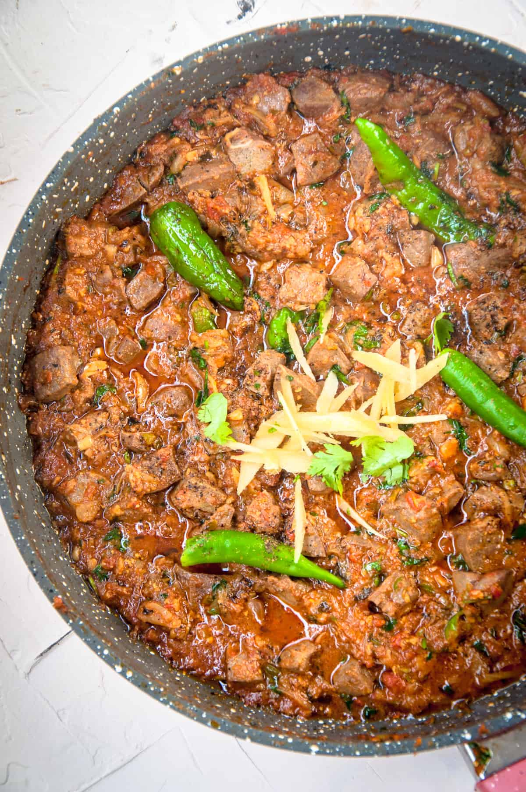

Pakistani Goat Liver

Ingredients
- 1 pound goat liver, cleaned and sliced
- 2 onions, sliced
- 4 cloves garlic, minced
- 1 inch ginger, grated
- 2 tomatoes, chopped
- 1 teaspoon red chili powder
- 1 teaspoon coriander powder
- 1 teaspoon cumin powder
- Salt, to taste
- Chopped coriander leaves, for garnish
Instructions
- In a pan, heat some oil over medium heat. Add the sliced onions and sauté until golden brown.
- Add the garlic and ginger, and sauté for another minute.
- Add the chopped tomatoes, red chili powder, coriander powder, cumin powder, and salt. Mix well and cook for 2-3 minutes.
- Add the sliced goat liver and mix gently to coat it with the spices.
- Cover the pan and cook over low heat for about 10-12 minutes, or until the liver is cooked through.
- Garnish with chopped coriander leaves and serve hot with naan or rice.